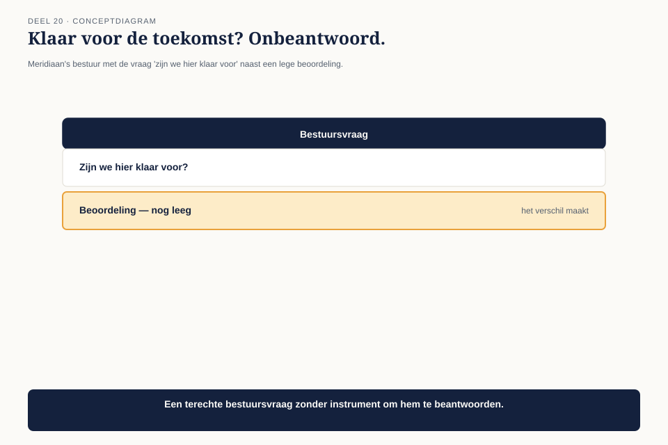

Deel 20 — Architectuurvolwassenheid
Niveau 2 — Engagement, waarde en specialisatie | Deelnemersreader BTABoK-cursus, Ductus — los aanbiedbaar
20.1 Waar dit deel over gaat
Dit deel staat, meer dan enig ander deel in de cursus, op zichzelf. Het instrument dat je hier leert — het volwassenheidsrooster — is bruikbaar zonder de negentien voorgaande delen te kennen, en Ductus kan dit deel dan ook als losse workshop aanbieden aan organisaties die niet de hele cursus volgen. Voor deelnemers die de cursus wel doorlopen, is het een moment om terug te kijken: alles wat je in niveau 1 en 2 hebt geleerd, komt hier samen in één beoordelingsinstrument.
Aan het eind van dit deel kun je:
- de volwassenheid van een architectuurpraktijk beoordelen langs vijf dimensies en vijf niveaus;
- het rooster gebruiken om te bepalen waar de eerstvolgende investering in de praktijk zelf het meeste oplevert;
- het onderscheid maken tussen volwassenheid nastreven als doel op zich en volwassenheid als gevolg van goed werk.
20.2 De vraag van het bestuur
Meridiaan’s bestuur overweegt, na de zichtbare resultaten van Mutatieplatform, de architectuurpraktijk uit te breiden van drie architecten binnen één programma naar een blijvende functie die de hele organisatie bedient. Voordat het bestuur daarin investeert, wil het weten: hoe volwassen is deze praktijk eigenlijk, en waar zitten de zwakke plekken?

Claudette en haar collega’s realiseren zich dat ze intuïtief weten waar de praktijk sterk en zwak is, maar geen gedeeld, herhaalbaar instrument hebben om dat te onderbouwen — dezelfde soort probleem als de stuurgroepvraag in deel 15, nu toegepast op de praktijk zelf in plaats van op één programma.
20.3 Vijf dimensies: de pijlers van niveau 1, hergebruikt
Het volwassenheidsrooster gebruikt geen nieuwe indeling maar hergebruikt de vijf pijlers die je vanaf deel 1 kent: Business Technology Strategy, Human Dynamics, Design, IT Environment, en Quality Attributes. De vraag per dimensie: hoe volwassen is de praktijk van Meridiaan op elk van deze vijf, los van de andere vier?

| Dimensie | Kernvraag voor de beoordeling |
|---|---|
| Business Technology Strategy | Wordt waarde structureel gemeten, of alleen incidenteel beweerd? |
| Human Dynamics | Zijn stakeholders en cultuur een vast onderdeel van elk traject, of een toevallige bijkomstigheid? |
| Design | Zijn besluiten en requirements traceerbaar, of leven ze alleen in iemands hoofd? |
| IT Environment | Is legacy een beheerste, doorlopende praktijk, of een jaarlijkse verrassing? |
| Quality Attributes | Zijn kwaliteitseisen expliciet en onderhandeld, of pas zichtbaar bij een incident? |
20.4 Vijf niveaus: van toevallig naar zelfversterkend
De tweede as van het rooster is een ladder van vijf niveaus, van laag naar hoog. Deze ladder is dezelfde voor elke dimensie — het onderscheid tussen de niveaus is generiek, ongeacht welke pijler je beoordeelt.

| Niveau | Kenmerk |
|---|---|
| 1 — Toevallig | het gebeurt wel eens, afhankelijk van wie er toevallig bij betrokken is |
| 2 — Herkend | het probleem is benoemd, maar de aanpak verschilt nog per persoon of team |
| 3 — Vastgelegd | er is een gedeeld instrument of werkwijze, gedocumenteerd en toegankelijk |
| 4 — Gemeten | het instrument wordt daadwerkelijk gebruikt, en het effect ervan wordt gevolgd |
| 5 — Zelfversterkend | de metingen voeden zichtbaar verbeteringen aan het instrument zelf terug |
De sprong van niveau 3 naar niveau 4 is meestal de moeilijkste. Veel organisaties hebben instrumenten (niveau 3) die vervolgens niet worden gebruikt op de manier die ze zouden moeten — een besluitenlogboek dat wordt ingevuld maar nooit geraadpleegd (deel 9), is niveau 3, geen niveau 4.
20.5 Het rooster ingevuld voor Meridiaan

| Dimensie | Niveau | Toelichting |
|---|---|---|
| Business Technology Strategy | 4 — Gemeten | de Architect Value-benadering (deel 15) meet daadwerkelijk, al is de terugkoppeling (niveau 5) nog niet systematisch |
| Human Dynamics | 3 — Vastgelegd | de stakeholderkaart bestaat en wordt bijgehouden, maar het gebruik verschilt nog per architect |
| Design | 4 — Gemeten | het gedeelde besluitenlogboek (deel 17) wordt daadwerkelijk geraadpleegd |
| IT Environment | 3 — Vastgelegd | de legacytriage bestaat, maar wordt niet periodiek herhaald |
| Quality Attributes | 2 — Herkend | het kwaliteitsprofiel wordt soms gebruikt, maar niet consequent bij elk traject |
Het patroon dat dit rooster blootlegt: Meridiaan is niet overal even volwassen, en dat is normaal. Een organisatie die op alle vijf dimensies gelijk scoort, is zeldzaam. De waarde van het rooster zit niet in een gemiddeld cijfer, maar in het zichtbaar maken van welke dimensie achterblijft — hier Quality Attributes, met de laagste score.
20.6 Waar de volgende investering het meeste oplevert
Het rooster is geen eindoordeel maar een keuzehulp: het wijst aan waar een investering in de praktijk zelf (niet in een specifiek systeem) het grootste effect zou hebben.

Voor Meridiaan betekent dit: niet nog meer investeren in Design (al op niveau 4) maar in Quality Attributes (op niveau 2) — bijvoorbeeld door het kwaliteitsprofiel verplicht te maken bij elk nieuw traject in plaats van optioneel, de stap die het naar niveau 3 zou tillen.
De valkuil: volwassenheid nastreven als doel op zich. Een organisatie die alleen “niveau 5 op alles” wil, zonder te vragen of dat de moeite waard is, verspilt energie aan dimensies die voor haar minder kritisch zijn. Het rooster is een diagnose-instrument, geen wedstrijd — de vraag is niet “hoe hoog kunnen we scoren” maar “waar levert de volgende stap het meeste op voor wat deze organisatie nodig heeft.”
20.7 Het antwoord aan het bestuur
Claudette presenteert het rooster niet als rapportcijfer maar als investeringsvoorstel: een concreet plan om Quality Attributes van niveau 2 naar niveau 3 te tillen binnen twee kwartalen, met de andere vier dimensies op onderhoud. Het bestuur, gewend aan de taal van de dekkingsgraad uit deel 16, herkent de logica onmiddellijk: dit is dezelfde beweging als een pensioenfonds dat niet overal tegelijk honderd procent dekking nastreeft, maar gericht investeert waar het tekort het grootst is.
20.8 Kernbegrippen
| Begrip | Betekenis in deze cursus |
|---|---|
| Volwassenheidsrooster | 5×5-instrument: de vijf pijlers uit niveau 1 als dimensies, vijf niveaus (toevallig/herkend/vastgelegd/gemeten/zelfversterkend) als ladder |
| De sprong van 3 naar 4 | het moeilijkste punt: een instrument bestaat, maar wordt het ook daadwerkelijk gebruikt en gevolgd? |
| Gerichte investering | het rooster wijst niet naar een gemiddeld cijfer maar naar de dimensie waar de volgende stap het meeste oplevert |
Volgende deel: deel 21 — Specialisatiekeuze. De vier andere specialisaties naast Solution, en het examenspoor dat je kiest voor CITA-A.